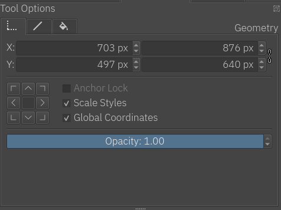
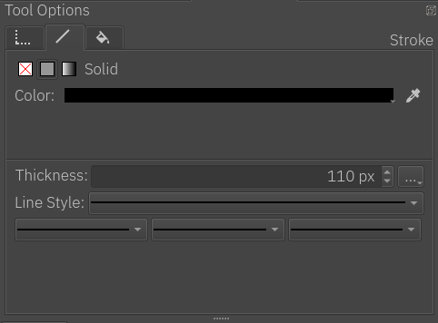
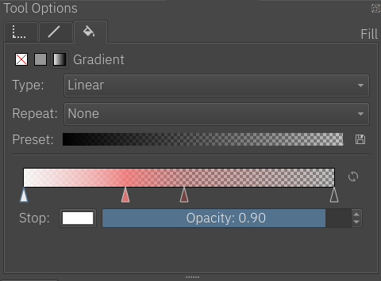

Shape Selection Tool¶

The shape selection tool used to be called the "default" tool. This had to do with Krita being part of an office suite once upon a time. But this is no longer the case, so we renamed it to its purpose in Krita: Selecting shapes! This tool only works on vector layers, so trying to use it on a paint layer will give a notification.
After you create vector shapes, you can use this tool to select, transform, and access the shape's options in the tool options docker. There are a lot of different properties and things you can do with each vector shape.
Selection¶
Selecting shapes can be done by two types of actions:
 on a single shape to select it.
on a single shape to select it.- and drag to select multiple shapes.
Blue selection (drag left to right): selects only shapes fully covered.
Green selection (drag right to left): selects all the touched shapes.
Blue selection: left-to-right, selects fully covered images. -- Green selection: right-to-left, selects touched shapes.¶
Placement, Scale, Angle and Distortion¶
Once an object is selected, a dashed bounding box will appear around it. The box will also have square handles. You can use this bounding box to do adjust: placement, scale, angle and distortion of the selected object.
Left to right: Placement, Scale, Angle and Distortion.¶
- Placement
- and hold inside the bounding box, while holding move the shape to the desired position.
- Scale
- and hold inside any of the square handles, move to adjust the dimensions of the object.
- Angle
Place the cursor slightly outside any of the corner handles.
and drag to adjust the angle of the shape.- Distortion
Place the cursor slightly outside any of the middle handles.
and drag to skew the shape.
Tool Options¶
The tool options of this menu are quite involved, and separated over 3 tabs.
Geometry¶
{kind=link}
Geometry is the first section in the tool options. This section allows you to set precisely the 'x' and 'y' coordinates, and also the width and height of the shape.
- Scale Styles
Enabled: when scaling, it will scale the stroke width with the shape.
Not enabled: when scaling, the stroke width will stay the same.
- Global coordinates
Determines whether the width and height bars use the width and height of the object, while taking transforms into account.
- Opacity
The general opacity, or transparency, of the object. Opacity for stroke and fill are explained in the next two sections.
警告
Anchor Lock is not implemented at the moment.
Stroke¶
{kind=link}
The stroke tab determines how the stroke around the object should look.
The first set of buttons allows us to set the fill of the stroke: None, Color and Gradient; the same options exist for the fill of the shape, please refer to the following "Fill" section for more details on how to use both of them.
Then, there are the settings for the stroke style:
- Thickness
Sets the width of the stroke. When creating a shape, Krita will use the current brush size to determine the width of the stroke.
- Cap and corner style
Sets the stroke cap and stroke corner style, this can be accessed by pressing the three dots button next to the thickness entry.
- Line-style
Sets the line style of the stroke: solid, dashes, dots, or mixes of dashes and dots.
- Markers
Adds markers to the stroke. Markers are little figures that will appear at the start, end or all the nodes in between, depending on your configuration.
Fill¶
{kind=link}
This section is about the color that fills the shape. As mentioned above in the Stroke section, the features are the same for both the fill of the stroke and the fill of the shape. Here is the explanation for both:
A fill can be: solid color, gradient, or none (transparent)
- None
No fill. It's transparent.
- Color
A flat color, you can select a new one by pressing the color button.
- Gradient
As the name implies this type fills the shape with a gradient. It has the following options:
- Type
A linear or radial gradient.
- Repeat
How the gradient repeats itself.
- Preset
A menu for selecting a base gradient from a set of predefined gradient presets, which can be edited as desired.
- Save Gradient
A quick way for saving the current gradient as a preset.
- Stops Options Line
A representation of how the gradient colors should look. The stops are represented by triangles. There are two stops by default one at the beginning and one at the end. You can create more stops just by clicking anywhere on the line. To select a stop
inside the triangle. To delete the stops, drag them to left or right until the end of the line.- Flip Gradient
A quick way to invert the order of the gradient.
- Stop
Choose a color for the current selected stop.
- Opacity
Choose the opacity for the current selected stop.
提示
When a stop triangle is selected, it is highlighted with a slight blue outline. The selected stop triangle will change its color and opacity accordingly when these options are changed.
提示
You can edit the gradient in two ways. The first one is the actual gradient in the docker that you can manipulate. Vectors always use stop-gradients. The other way to edit gradients is editing their position on the canvas.
- Mesh Gradient
Fills the shape with a Mesh Gradient. It has following options:
- Stop
Change the color of the selected stop. Only the color of a Corner can be changed (rectangle), changing the color of Bezier handle (circle) is not possible.
- Rows
Change the number of rows in a Mesh Gradient.
- Columns
Change the number of columns in a Mesh Gradient.
- Smoothing
There are two possible values, Bilinear (default) and Bicubic. Bilinear is the linear interpolation of the color of stops, however it may create Mach Banding effect. Bicubic is the bicubic interpolation of the color stops, this should produce smoother gradient.
備註
Mesh Gradients follow SVG draft 2 for the rendering.
Creating Mesh Gradients¶
When Mesh Gradients option is selected for a shape, Krita fills it with default mesh gradient, which is an alternating color (it alternates between background color and white). Changing number of rows and columns from Tool Options, will add more patches to the Mesh Gradient and corners can be changed individually.
Editing Mesh Gradients¶
The way to edit Mesh Gradients is pretty straight forward. Each curve is an individual Bezier Curve. There are two ways to change the structure, one is by dragging the corner (rectangle) and other is by dragging the handle (circle).
Left to right: Normal, Corner Hovered, Corner Moved and Selected.¶
To change the color, a corner has to be selected and then Tool Options can be used to change the color of the selected corner.
備註
When importing from Inkscape, shapes may be grouped, which may not allow Krita to edit Mesh Gradients. To fix this, first ungroup (via  ) them.
) them.
Right-click menu¶
The shape selection tool has a nice right click menu that gives you several features. If you have an object selected, you can perform various functions like cutting, copying, or moving the object to the front or back.

If you have multiple objects selected you can perform "Logical Operators" on them, or boolean operations as they are commonly called. It will be the last item on the right-click menu. You can unite, intersect, subtract, or split the selected objects.